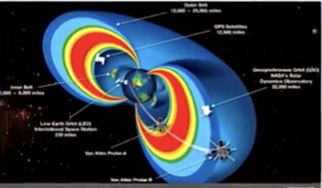
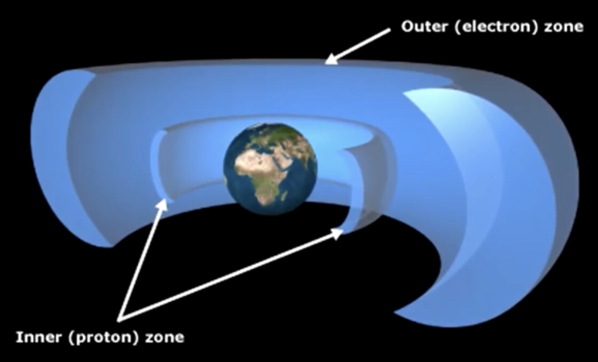

https://sciencing.com/use-petrified-wood-energy-4441085.html
You should read about van Allen belt


Now for the pillars argument the Quran actually states there is none in 13:2
https://m.youtube.com/watch?v=R7fSfs2rLPU
Ibn ‘Aasshoor may Allaah have mercy upon him said in his Tafseer (At-Tahreer wat-Tanweer):
“The term {…or [could] let fall upon them fragments from the sky} means, a piece of the celestial bodies.”
[End of quote]
https://science.nasa.gov/science-news/science-at-nasa/2006/28apr_skyisfalling
https://edition.cnn.com/2015/10/27/world/space-junk-impact-feat/index.html